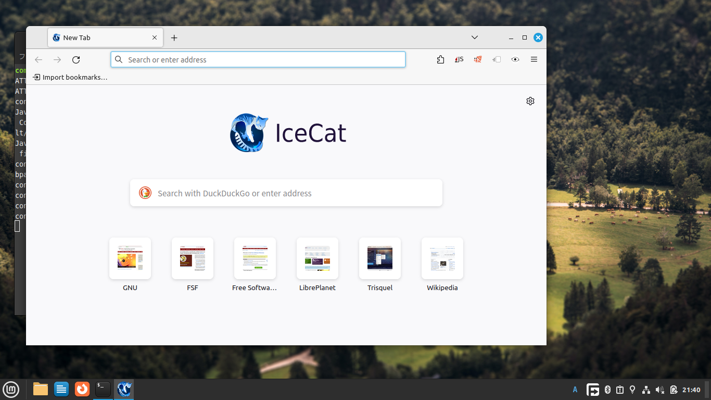
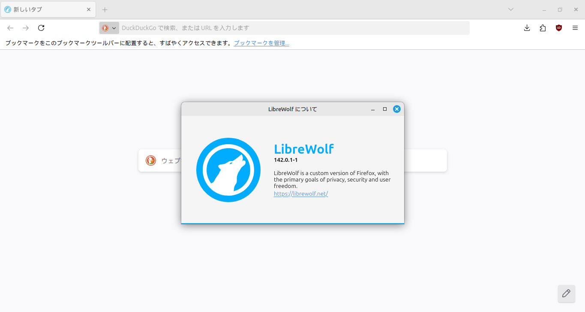
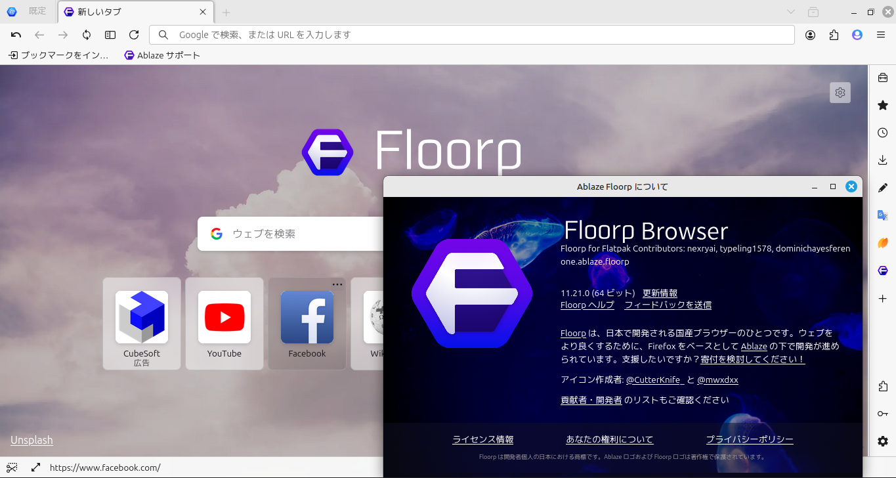
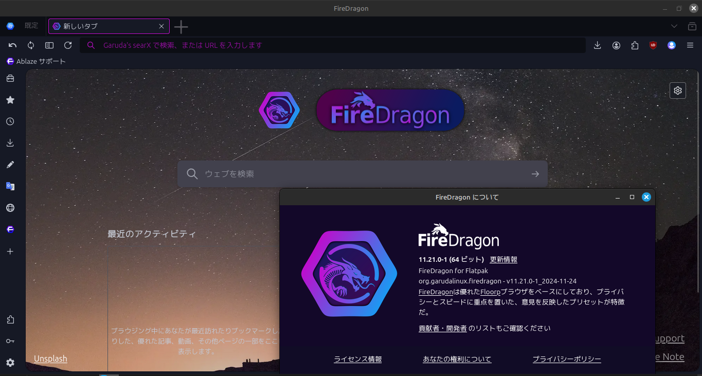
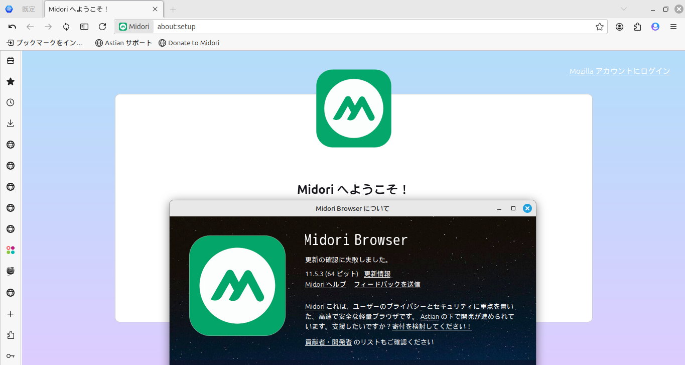
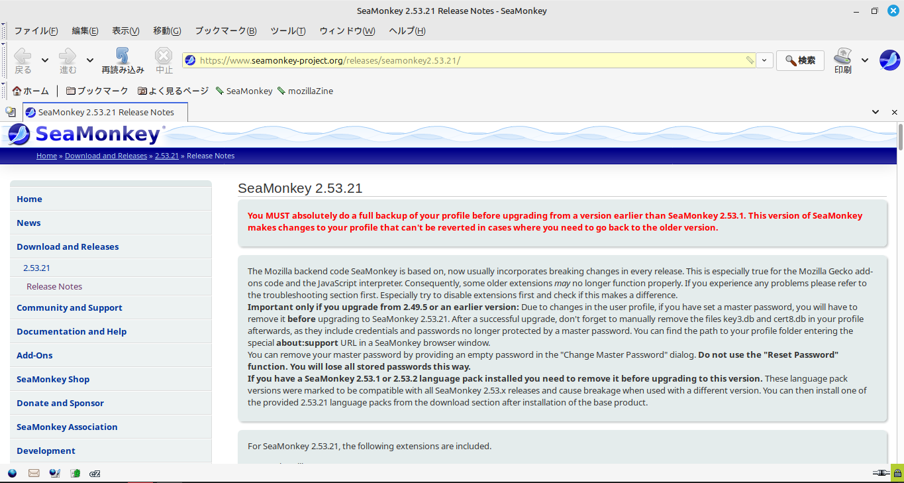
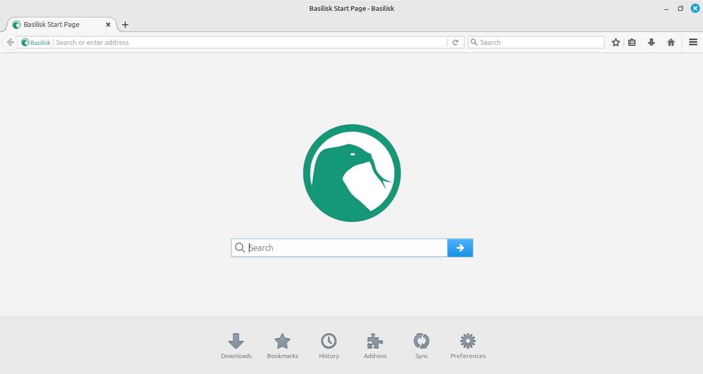

Firefox派生ブラウザーの紹介
・ブラウザ
ウェブページを表示させるためのブラウザ、何を使っているだろう。今こそはほとんどの人がChromeを使っているが、時代によってはIEを使う人が多かった時代、NetScapeと呼ばれるブラウザが主に使われていた時代、IEとChromeとFirefoxが同じ程度使われていた時代もある。最近MS Edgeを使う人が多くなっているが、OperaやVivaldiといったブラウザを使う人や、Macintosh系の端末を使う人にはSafariを使う人もいるだろう。
・ブラウザの三分類
このように種類が非常に多いブラウザは、おもに３つに分類することができる。
分類をするために、そもそもブラウザとは何かということを考える。ブラウザはウェブページを表示することを可能にするアプリケーションだが、具体的に、HTML・CSSなどと行ったサイトの内容が書かれたファイルを読み取り、それに準じてウェブページを表示させることになる。HTMLやCSSファイルなどには、「どの文章・画像をどこに表示させるか」といった情報が書かれており、ブラウザはそれに応じてページを表示させることになるが、ファイルの内容を読み取り解釈(レンダリング)するためには「レンダリングエンジン」なるものが必要となる。
現在、ブラウザに使われているレンダリングエンジンはChromeなどが利用しているBlink、Firefoxなどが利用しているGecko、Safariが利用しているWebkitの主に３つである。Safari派生のブラウザがないことを考えると、ほとんどのブラウザはChromiumかGeckoをレンダリングエンジンとして利用したもので、それぞれのレンダリングエンジンを搭載した標準のブラウザが「Chromium」、「Firefox」なので、Safariを除く他のブラウザはChromiumかFirefoxから派生したブラウザであるということになる。
(注)最近までは、MS EdgeはEdgeHTML、IEがTrident、OperaがPrestoというレンダリングエンジンを使用していたがいずれも開発が終了している。
・Firefox派生のブラウザ
では実際にどのブラウザがChromium派生で、どのブラウザがFirefox派生なのか。
StartCounterによると、2025年の8月の電算機におけるブラウザのシェアは、Google Chromeが63%、MS Edgeが21%、Firefoxが6.4%、Safariが5.7%、Braveが1.5%、Operaが1.0%となっている。
ここまで列挙したブラウザの内、FirefoxとSafariを除くすべてのブラウザーがChromium派生なのである。他にもVivaldi、Cent Browserなどのブラウザも聞いたことがあるかもしれないが(聞いたことがあれば恐らく貴方はブラウザマニアだろう)、これらも現在(2024年)はすべてChromium派生のブラウザである。
貴方は思ったかもしれない、「Firefox派生のブラウザがないではないか。」、と。
そう、Firefox派生のブラウザは意外と知られていない。この記事では2025年現在、開発が継続されている少数派のFirefox派生のブラウザを紹介していこう。
・Icecat

GNUzilla and IceCat - GNU Project
火、水と来たら、次は土?金?いや、氷(ice)である。
以前の記事でも紹介したように、FirefoxがGPLライセンスに準拠するように作られたブラウザIceweaselの開発を継承して開発されているブラウザである。JavaScriptの実行を制限する拡張機能などが既定でインストールされており、プライバシーを重視したブラウザと言える。既定の検索エンジンはDuckDuckGo。
・Librewolf

LibreWolf
火の狐、氷の猫(icecat)と来たら、次は狼か。
プライバシーを重視したブラウザで、Firefoxと異なり、ホーム画面の広告ショートカットがなく、検索窓だけが表示される、あっさりとしたホーム画面となっている。
既定の検索エンジンはDuckDuckGo。広告ブロッカーUBlockOriginが既定でインストールされている。
・TorBrowser
Tor Project -- Anonymity Online
知る人ぞ知る、ダークウェブにアクセスするためのブラウザ。
サイトにアクセスするために３つのサーバーを経由するシステム、Torを利用し、通常のサイトでは開けない、末尾が.onionのサイトを開くことができる。
一部の国では利用が禁止されているので注意すること。
・Floorp

Floorp
色々な記事で紹介されているので、このサイトで深く紹介する必要はないだろう。
日本国産のFirefox派生ブラウザ。学生が作ったと考えると非常に驚くだろう。
「Firefox版Vivaldi」といえるほど充実したブラウザで、プライバシーを維持しながら高度なカスタマイズが可能となっている。
・FireDragon

FireDragon
厳密にはFloorp派生だが、FloorpがFirefox派生ということで紹介する。
以前はLibrewolfブラウザから派生したこともあり、Floorpを派生としてLibrewolfのような高度なプライバシー性を維持するように作られている。
既定の検索エンジンは、Garuda's SearX。Librewolfと同様に、広告ブロッカーUBlockOriginが既定でインストールされている。
・Midori

Astian, Inc. Midori Browser light web browser
昔ラズパイを使っていた人は、ブラウザの一つにMidoriがあったのを覚えているかもしれない。以前Midoriは、レンダリングエンジンとしてwebkitを採用していたが、2023年よりFloorpをベースとしたエディションを開発している。Floorp派生であることが明確に示されていない(2025年8月時点)との批判もある。
既定の検索エンジンはAstian Go。
・SeaMonkey

SeaMonkey
ウィンドウの上部に広がる大きめのアイコン。
いつの時代のブラウザなのか、いや、2025年も開発が続くブラウザだ。
古いアドオンをサポートし、Firefoxのバージョン60に相当するブラウザだが現在もメンテナンスが行われている。
筆者が過去にメール専用として愛用していたブラウザ。
・Basilisk

Basilisk
古いFirefoxから派生したブラウザ。
使い勝手は古いfirefoxに近いが、最新のwebページも問題なく開ける。
既定の検索エンジンはDuckDuckGo。
・Serpent
RT's Free Soft -- Weekly browser binaries
このブラウザ、なんとwindowsXPでも使えます。
先ほど紹介したBasiliskブラウザをwindowsXPで使えるように改造したもので、2025年現在も開発が続いている。
世の中には「Win10がサポートを終了する、まずい!」と叫ぶ人もいれば、「まだwinXP、win2kを使い続けるぞ!」と粘る人もいる。
貴方も棚の奥に眠っている古いパソコンに入れてみては如何だろうか。
・総括
如何だろうか。冒頭で紹介した通り、約9割のユーザーがChromium派生のブラウザを使う中で、Firefox派生のブラウザー計10個紹介することができた。
Firefox派生のブラウザには他にもPalemoonやr3dfoxといったものがあり、web上を探せばまだまだ見つけることができるかもしれない。また、強者であれば「Firefox派生のブラウザを自作」したくなる人も出てくるだろう。
最後に、マイナーなブラウザの中には危険なものもあるかもしれないので、サイトで紹介されているかどうかに関わらず、是非一度ウィルスチェックなどを行ってから使うようにしたい。
記事作成日:2024/09/13
情報最終更新日:2025/09/13
執筆：虚時間fλ